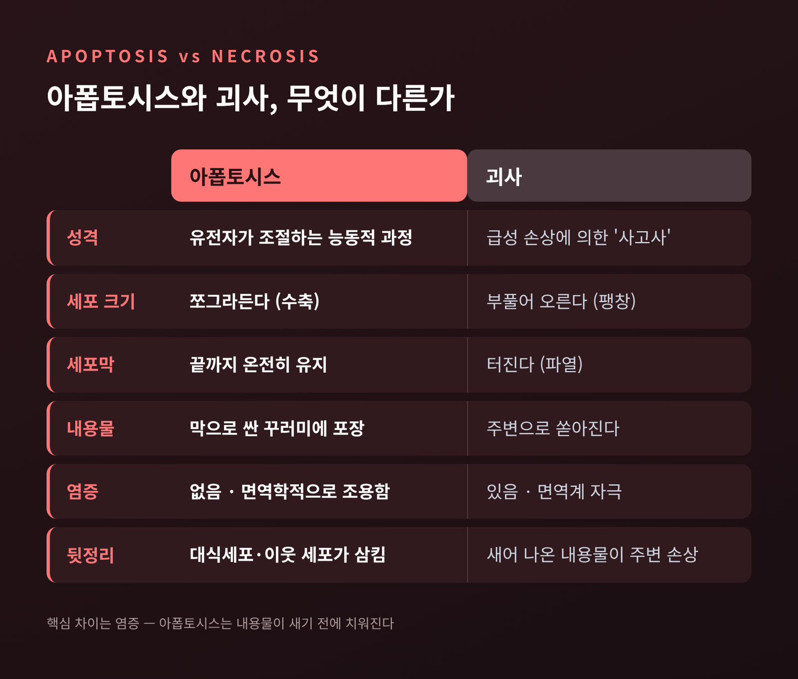
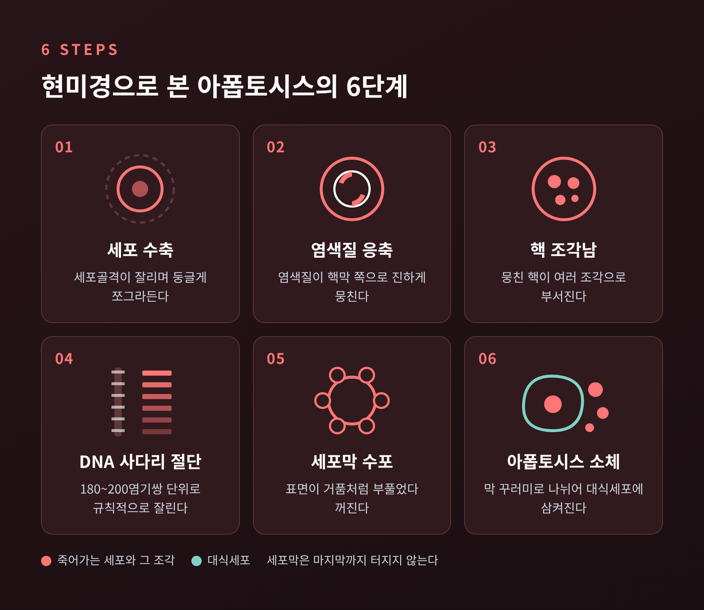
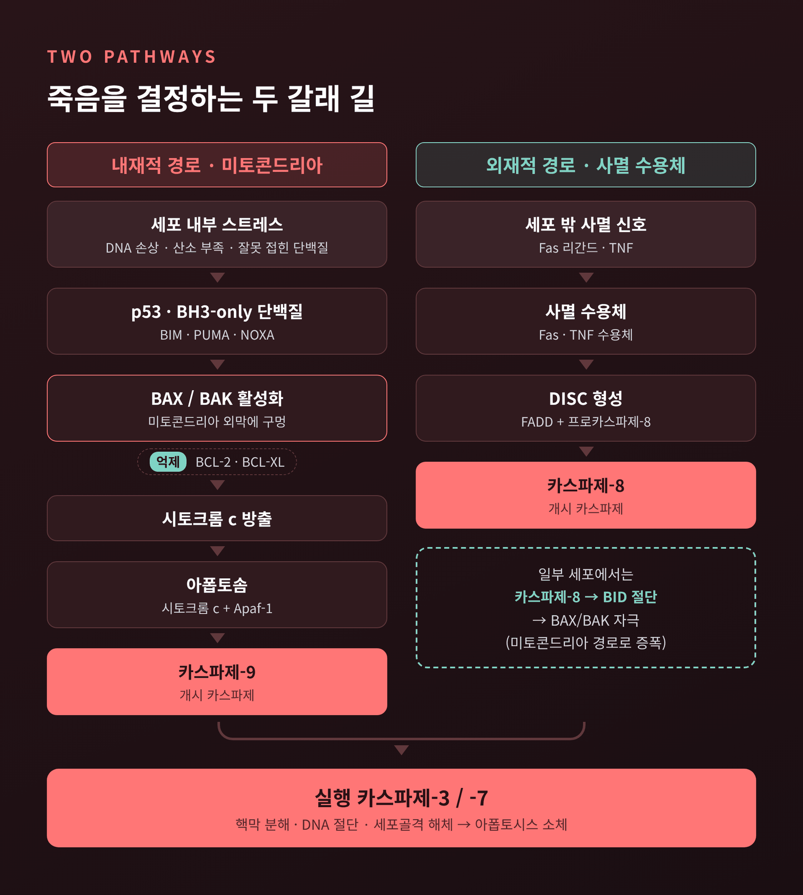
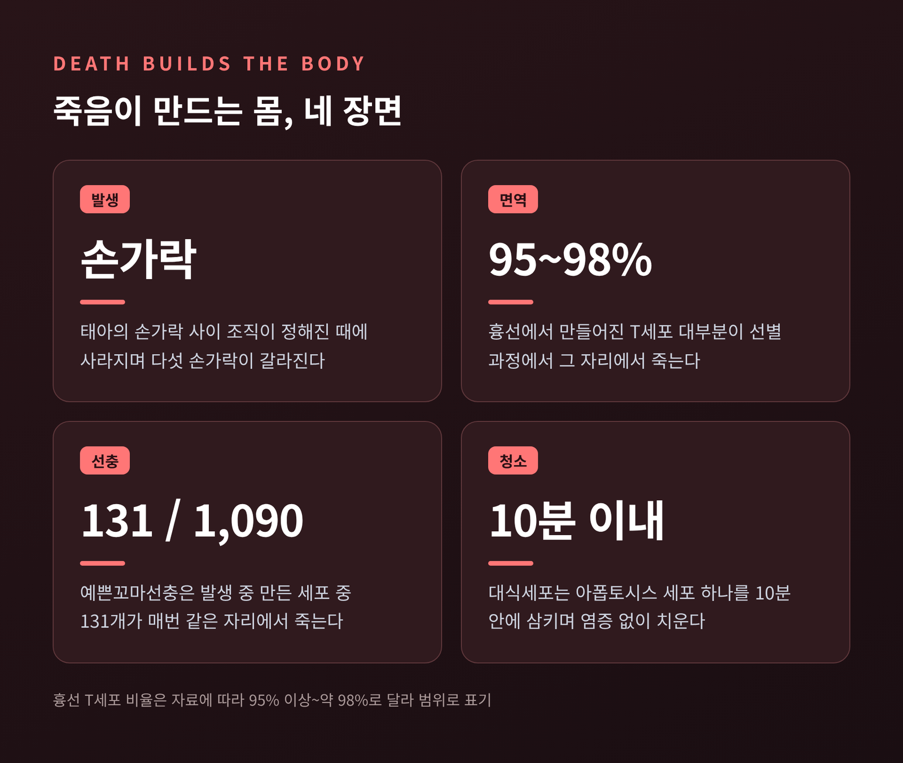
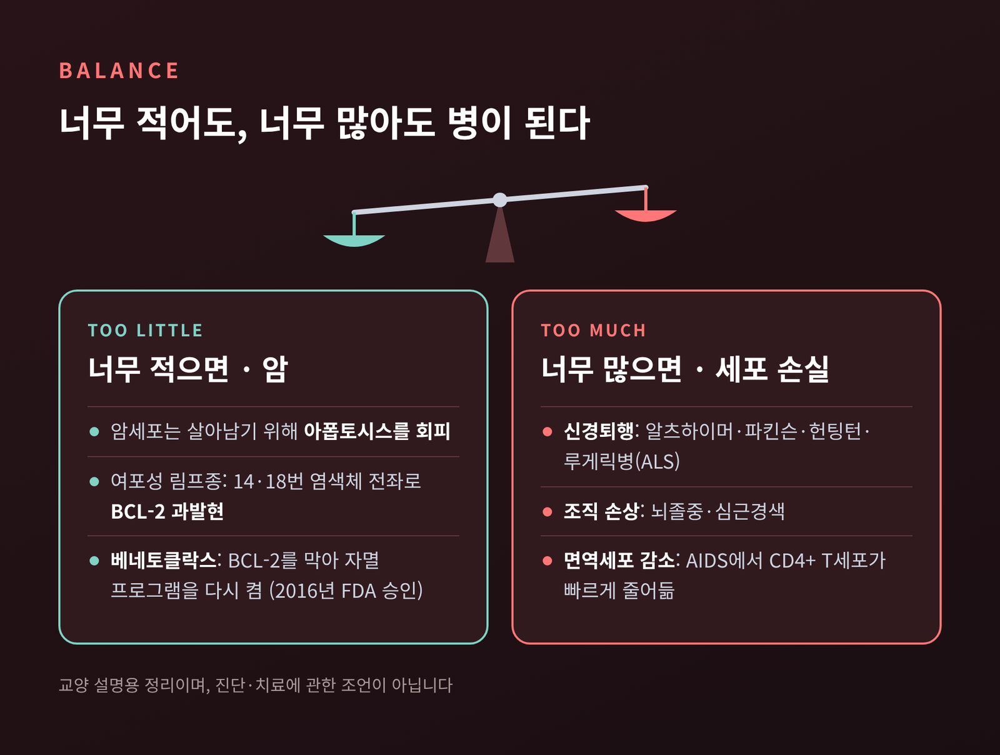

세포자멸사(아폽토시스)의 원리 — 세포는 왜, 어떻게 스스로 죽을까

오늘은 세포자멸사, 곧 아폽토시스에 대해 이야기해 보려 합니다. 우리 몸에서는 지금 이 순간에도 수많은 세포가 스스로 목숨을 끊고 있습니다. 사고로 죽는 것이 아니라, 정해진 절차에 따라 조용히 사라지는 죽음입니다.
핵심은 세 가지로 요약됩니다.
- 세포자멸사는 유전자가 조절하는 '프로그램된 세포 죽음'이며, 염증 없이 깔끔하게 끝납니다.
- 미토콘드리아에서 시작하는 내재적 경로와, 세포 밖 신호로 시작하는 외재적 경로가 있습니다. 두 길 모두 카스파제라는 효소에서 만납니다.
- 이 장치가 너무 약하면 암이, 너무 세면 신경퇴행 같은 문제가 생길 수 있습니다.
이 글은 생물학 교양 설명이며, 질병의 진단이나 치료에 관한 조언이 아닙니다.
■ 세포는 왜 스스로 죽는가
다세포 생물의 세포 수는 단순한 뺄셈으로 정해집니다. 새로 만들어지는 세포 수에서 아폽토시스로 사라지는 세포 수를 뺀 값입니다. 세포 분열이 덧셈이라면, 세포자멸사는 그에 맞서는 뺄셈입니다.
그 규모는 생각보다 큽니다. 다만 하루에 몇 개가 죽는지는 자료마다 차이가 큽니다. 성인 기준 하루 500억~700억 개라는 추정이 있고, 1,000억 개 이상이라는 리뷰 논문도 있습니다. 2002년 노벨상 발표문은 매일 1조 개 넘는 세포가 만들어지고 같은 수가 죽는다고 적었습니다. 추정 방법이 달라 숫자는 엇갈리지만, 적어도 수백억 개 단위라는 점은 같습니다. 1년 동안 이렇게 사라지는 세포를 모으면 체중과 맞먹는다는 브리태니커의 추정도 있습니다.
죽어야 하는 이유는 크게 세 가지입니다. 몸을 빚기 위해, 쓸모가 다한 세포를 치우기 위해, 그리고 위험해진 세포를 없애기 위해서입니다. 암이 될 수 있는 세포나 바이러스에 감염된 세포가 스스로 물러나 주는 것은 몸 전체를 지키는 일입니다.
■ '떨어지는 잎'이라는 이름이 붙기까지
아폽토시스라는 말은 1972년에 처음 등장했습니다. 존 커, 앤드루 와일리, 앨러스터 커리 세 병리학자가 『British Journal of Cancer』에 발표한 논문에서입니다. 세 사람은 모두 스코틀랜드 애버딘 대학에 있었습니다.
이름은 같은 대학 그리스어 교수 제임스 코맥이 제안했습니다. 그리스어로 '떨어짐', 가을에 나무에서 잎이 떨어지는 모습을 가리킵니다. 연구진은 세포 분열을 뜻하는 'mitosis'와 짝을 이루는 단어를 원했다고 합니다. 늘어남과 떨어짐이 한 쌍의 단어로 묶였습니다.
사실 커는 그보다 10년쯤 앞서 이 현상을 보았습니다. 1962년 무렵 위축되는 쥐의 간에서, 터지지 않고 쪼그라드는 세포를 관찰한 것입니다. 당시에는 이를 '수축 괴사'라고 불렀습니다.
예전에는 세포의 죽음을 대부분 사고, 즉 피할 수 없는 손상의 결과로 보았습니다. 지금은 다릅니다. 세포가 능동적으로 수행하는 정교한 생명 활동으로 이해합니다. 이 분야 논문은 이미 50만 편을 넘었고, 하루 100편 이상이 새로 나온다고 합니다.
■ 괴사와 무엇이 다른가, 핵심은 염증
세포의 죽음에는 대표적으로 두 가지 방식이 있습니다. 하나는 괴사(necrosis), 다른 하나가 아폽토시스입니다.
괴사는 급성 손상으로 세포가 망가져 일어나는 '사고사'에 가깝습니다. 세포가 물을 먹은 듯 부풀다가 세포막이 터지고, 안에 있던 내용물이 주변으로 쏟아집니다. 그 내용물이 면역계를 자극해 염증이 생깁니다.
아폽토시스는 정반대입니다. 세포는 오히려 쪼그라들고, 세포막은 끝까지 온전히 유지됩니다. 내용물이 새기 전에 이웃 세포나 대식세포가 삼켜 버리므로 염증이 생기지 않습니다. 의학 교과서는 이를 "면역학적으로 조용한" 죽음이라고 표현합니다.

■ 현미경으로 본 마지막 순간
아폽토시스는 겉모습만으로도 알아볼 수 있을 만큼 특징적인 단계를 거칩니다.
- 세포 수축: 카스파제가 세포골격 단백질을 잘라 세포가 둥글게 쪼그라듭니다. 세포질이 빽빽해집니다.
- 염색질 응축: 핵 속 염색질이 핵막 쪽으로 진하게 뭉칩니다.
- 핵 조각남: 뭉친 핵이 여러 조각으로 부서집니다.
- DNA 사다리 절단: 효소가 DNA를 180~200염기쌍 단위로 규칙적으로 자릅니다. 전기영동 겔에 걸면 사다리 모양 띠가 나타나, 오래도록 아폽토시스를 확인하는 간편한 표지로 쓰였습니다.
- 세포막 수포: 세포 표면이 거품처럼 부풀었다 꺼지기를 반복합니다.
- 아폽토시스 소체: 세포가 막으로 싸인 작은 꾸러미들로 나뉩니다. 소기관도 꾸러미 안에 온전히 담깁니다.
마지막 꾸러미는 주변 세포에 삼켜져 분해되고 재활용됩니다. 흔적이 거의 남지 않습니다.

■ 131개의 정해진 죽음, 예쁜꼬마선충이 알려준 것
세포자멸사가 유전자로 짜인 프로그램이라는 사실은 작은 선충 한 종에서 밝혀졌습니다. 예쁜꼬마선충(C. elegans)입니다.
시드니 브레너는 이 선충을 실험 모델로 세웠습니다. 존 설스턴은 수정란에서 성체까지 세포 하나하나의 족보를 그렸습니다. 놀랍게도 그 족보는 개체마다 똑같았습니다. 발생 과정에서 1,090개의 세포가 만들어지고, 그중 정확히 131개가 매번 같은 자리에서 죽습니다. 그렇게 성체는 959개의 세포를 갖게 됩니다.
로버트 호비츠는 이 죽음을 지휘하는 유전자를 찾아냈습니다. 1986년에 죽음에 꼭 필요한 ced-3와 ced-4를, 이어서 죽음을 막는 ced-9을 밝혔습니다. 이후 ced-3는 사람의 단백질 분해효소와 닮은 것으로 확인됐습니다. 선충의 세포 죽음 유전자 대부분은 사람에게도 대응하는 유전자가 있습니다. 세 사람은 2002년 노벨 생리의학상을 함께 받았습니다.
■ 안에서 시작되는 길: 미토콘드리아 경로
세포가 죽음을 '결정'하는 길은 크게 두 갈래입니다. 첫째는 세포 내부의 문제에서 출발하는 내재적 경로입니다.
DNA 손상, 산소 부족, 잘못 접힌 단백질 같은 스트레스가 방아쇠가 됩니다. 이때 결정권을 쥔 것이 BCL-2 계열 단백질입니다. 이 가족은 최소 25개 구성원으로 이루어져 있고, 크게 두 편으로 나뉩니다.
- 죽음을 미는 쪽: BAX, BAK, 그리고 스트레스를 감지하는 BH3-only 단백질들(BIM, PUMA 등)
- 죽음을 막는 쪽: BCL-2, BCL-XL
평소에는 막는 쪽이 우세합니다. 스트레스가 쌓여 균형이 기울면 BAX와 BAK이 뭉쳐 미토콘드리아 바깥 막에 구멍을 냅니다. 그 틈으로 시토크롬 c가 흘러나옵니다. 본래 에너지를 만드는 데 쓰이던 단백질이 죽음의 신호로 바뀌는 순간입니다.
흘러나온 시토크롬 c는 Apaf-1과 결합해 '아폽토솜'이라는 복합체를 만듭니다. 아폽토솜은 개시 효소인 카스파제-9을 깨우고, 카스파제-9은 실행 효소인 카스파제-3과 -7을 활성화합니다. 실행 카스파제는 핵막을 허물고, DNA 수선을 막고, DNA를 잘게 자릅니다. 함께 빠져나오는 SMAC이라는 단백질은 카스파제를 붙잡고 있던 억제 단백질(IAP)을 풀어 줍니다.
■ 밖에서 들어오는 명령: 사멸 수용체 경로
둘째는 바깥에서 "이제 죽으라"는 명령이 도착하는 외재적 경로입니다.
세포 표면에는 Fas, TNF 수용체 같은 '사멸 수용체'가 있습니다. 여기에 Fas 리간드나 TNF가 결합하면, 세포 안쪽에서 FADD라는 연결 단백질과 카스파제-8이 모여듭니다. 이 덩어리를 DISC(사멸 유도 신호 복합체)라고 부릅니다. DISC에서 활성화된 카스파제-8은 곧바로 카스파제-3·7을 깨웁니다.
두 길은 따로 놀지 않습니다. 일부 세포에서는 카스파제-8이 BID라는 단백질을 잘라 BAX·BAK을 자극합니다. 바깥 명령이 미토콘드리아 경로까지 끌어들여 신호를 키우는 것입니다.
면역계는 이 경로를 무기로 씁니다. 감염이 끝난 뒤 남아도는 T세포는 Fas–Fas 리간드 결합으로 정리됩니다. 세포독성 T세포는 퍼포린으로 표적 세포에 구멍을 내고 그랜자임을 들여보내 카스파제를 켭니다.

■ 유전체의 수호자, p53
내재적 경로의 앞단에는 p53이라는 단백질이 서 있습니다. DNA가 손상되면 세포 안에 p53이 쌓입니다. p53은 먼저 세포 주기를 G1 단계에서 멈춰 수선할 시간을 법니다. 손상이 너무 크면 그때는 BAX, PUMA, NOXA 같은 죽음 촉진 단백질을 늘려 아폽토시스로 이끕니다.
고칠 수 있으면 고치고, 안 되면 스스로 물러나게 하는 것입니다. 이 문지기가 고장 나면 망가진 세포가 살아남을 수 있습니다. 실제로 p53은 암에서 흔히 변이가 발견되는 유전자이고, 태어날 때부터 TP53에 변이가 있는 경우는 리-프라우메니 증후군과 연결됩니다.
■ "나를 먹어 주세요", 포스파티딜세린과 대식세포
죽은 세포의 뒷정리도 아폽토시스의 일부입니다.
건강한 세포의 막에서 포스파티딜세린이라는 지질은 거의 전부 안쪽 층에 숨어 있습니다. 아폽토시스가 시작되면 카스파제가 켠 효소(스크램블라제)가 이것을 바깥으로 뒤집어 내놓습니다. 대식세포에게는 이것이 '나를 먹어 달라'는 표지판입니다.
죽어가는 세포는 '나를 찾아오라'는 신호 물질도 내보냅니다. 반대로 건강한 세포는 CD47이라는 '먹지 마' 신호를 달고 있습니다.
대식세포는 아폽토시스 세포 하나를 10분이 채 안 되어 삼킬 수 있습니다. 이 청소를 에페로사이토시스라고 부르는데, 라틴어로 '무덤으로 옮긴다'는 뜻입니다. 청소가 조용히 끝나야 염증이 생기지 않습니다. 실제로 청소가 제대로 되지 않으면 자가면역 질환과 연결될 수 있다는 연구가 있습니다. 전신홍반루푸스 환자에게서 죽은 세포 청소 결함이 반복해서 보고됐습니다. 다만 사람에서의 근거는 아직 정황적인 수준이라는 단서도 붙어 있습니다.
■ 손가락과 T세포, 죽음이 만드는 몸
세포자멸사의 쓰임새는 일상적인 몸의 모양에서도 드러납니다.
태아의 손가락 사이에는 처음에 조직이 채워져 있습니다. 그 사이 조직의 세포들이 정해진 때에 아폽토시스로 사라지면서 다섯 손가락이 갈라집니다. 올챙이 꼬리가 없어지는 것도, 월경 주기에 자궁내막이 떨어져 나가는 것도 같은 원리가 관여합니다.
면역계에서는 더 극적입니다. 흉선에서 만들어지는 T세포의 95~98%가 성숙하지 못하고 그 자리에서 죽습니다. 자기 몸을 공격할 만큼 너무 강하게 반응하는 세포, 쓸모 있는 신호를 받지 못한 세포가 함께 걸러집니다. 살아남은 소수만 혈액으로 나갑니다. 이 엄격한 선별이 있기에 면역계가 내 몸을 적으로 오인하는 일이 줄어듭니다.

■ 너무 적어도, 너무 많아도 병이 됩니다
아폽토시스는 균형의 문제입니다.
너무 적을 때: 암 암세포가 살아남으려면 아폽토시스를 피해야 합니다. 여포성 림프종에서는 염색체 14번과 18번이 맞바뀌면서 BCL-2가 지나치게 많이 만들어집니다. 죽음을 막는 브레이크가 고장 나 풀리지 않는 것입니다.
이 약점을 노린 약이 베네토클락스입니다. BCL-2에 달라붙어 그 기능을 막아, 암세포에 잠겨 있던 자멸 프로그램을 다시 켜는 방식입니다. 2016년 4월 미국 FDA가 17p 결손이 있고 이전 치료 경험이 있는 만성 림프구성 백혈병 환자에게 승인했습니다. 106명을 대상으로 한 임상시험에서 80%가 완전 또는 부분 관해를 보였습니다. 암세포의 아폽토시스 회피 능력을 직접 겨냥한 첫 시판 약으로 평가받습니다. 선충의 세포 계보에서 시작된 기초 연구가 수십 년 뒤 약으로 이어진 셈입니다.
너무 많을 때: 신경퇴행과 손상 반대로 세포가 필요 이상으로 죽는 것도 문제입니다. 알츠하이머병, 파킨슨병, 헌팅턴병, 루게릭병(ALS)에서는 과도한 신경세포 아폽토시스가 중심 특징으로 꼽힙니다. 뇌졸중과 심근경색으로 인한 조직 손상, AIDS에서 CD4+ 면역세포가 빠르게 줄어드는 현상에도 지나친 세포 죽음이 관여합니다. 그래서 반대로 아폽토시스를 누그러뜨려 허혈 손상을 줄이려는 연구도 이어지고 있습니다.
물론 아폽토시스만으로 이 질환들을 다 설명할 수는 없습니다. 괴사 말고도 네크롭토시스, 파이롭토시스, 페롭토시스처럼 다른 세포 죽음 방식들이 계속 밝혀지고 있고, 연구는 아직 진행 중입니다.

■ 마치며
정리하면 이렇습니다. 세포자멸사는 BCL-2 계열의 저울질로 죽음을 결정하고, 카스파제로 실행하며, 대식세포가 흔적 없이 치우는 과정입니다. 그 덕분에 우리는 다섯 손가락을 갖고, 내 몸을 공격하지 않는 면역계를 가지며, 매일 생기는 위험한 세포를 대부분 걸러냅니다.
결국 남는 메시지는 하나입니다. "잘 죽는 세포가 건강한 몸을 만든다."
1972년 세 병리학자가 고른 이름은 지금 보아도 잘 어울립니다. 나무가 잎을 떨궈야 다음 봄을 맞듯, 몸도 날마다 세포를 떠나보내며 제 모습을 지킵니다. 죽음이 생명의 반대말이냐고 묻는다면, 세포의 세계에서는 꼭 그렇지 않다고 답하겠습니다.
참고 자료
- Britannica, Apoptosis
- StatPearls(NCBI Bookshelf), Apoptosis
- ASU Embryo Project, Kerr·Wyllie·Currie(1972) 논문 해설
- 2002 노벨 생리의학상 발표문(ScienceDaily 게재)
- Lemke, How macrophages deal with death (Nat Rev Immunol, 2019)
- Cell Death & Differentiation, BCL-2 계열과 MOMP 리뷰
- ESMO, 베네토클락스 FDA 승인 소식(2016)
#세포자멸사 #아폽토시스 #프로그램된세포죽음 #괴사 #카스파제 #BCL2 #p53 #예쁜꼬마선충 #베네토클락스 #생명과학